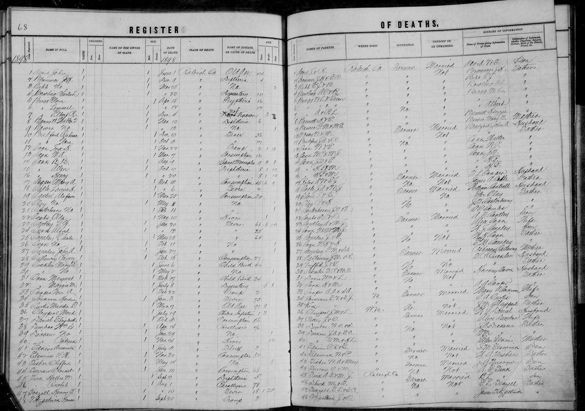

Cannaday line · Trap Hill, Raleigh County, West Virginia
Profile status: UNPROVED
Quick Facts
Born
About 1822–1828, Virginia UNPROVED (six sources spread 1822–1833 with no day or month anywhere; the cluster is 1826–1828, and a new data point, 1827, comes from WikiTree Canaday-171 and her memorial. The death register’s age 65 implies about 1833, the sole late outlier, and it is informant-reported)
Died
25 May 1898, Raleigh County, West Virginia, age 65 DOCUMENTED (Register of Deaths, 1898, p. 68, line 25, image read directly: “Canaday, Elinda,” cause Fever, consort “Not” — widowed, not married. The old account’s age “75” is contradicted)
Married
Jacob Burl Cannaday, licence 11 October 1841, Franklin County, Virginia DOCUMENTED (marriage bond image: bride written “Elinder Canaday”. The ceremony, 21 October 1841 by Michael Howry, is reported only)
Buried
Canaday Cemetery, Glen White, Raleigh County, West Virginia SUPPORTED (death register + memorial 128500650. No stone photo exists for her on Find a Grave — her memorial’s photos are a portrait and the death-register image)
Household
Keeping house, Trap Hill, Raleigh County SUPPORTED (1870 census: Ellenor 40, keeping house; 1880 census: Elender 58. The 1850 household in Patrick County also held a 20-year-old woman named “Patr Foley,” whose relationship is unproved)
Name
“Ellender” on the roster; the records give “Elenor,” “Elinder,” “Elenda,” “Elinda” SUPPORTED (the roster spelling governs the page title. Tricia’s tree calls her “Mary Canaday” and has no Ellender — that name is recorded honestly here and is not adopted)
Immediate Family
Parents
Father “J. Canaday” × Mother “E.” DOCUMENTED
Her parents are unknown beyond the initials her own death register gives — father “J. Canaday,” mother “E.” — read directly from the register image. She was born a Cannaday: the marriage bond and the register both speak to her birth name as Cannaday, SUPPORTED weakly. The compiled claim that her parents were Pleasant Cannaday × Elizabeth “Betsy” Young is UNPROVED (Clark 1988 via Putman), and the register initials “J. & E.” differ from that claim. “Young” as her maiden name is CONTRADICTED — it is the alleged mother’s maiden name, not hers. Her son William Jacob’s 1927 death record records his mother’s maiden name as not known — the family had already lost it within 29 years of her death. The full conflicts are in Research Notes.
Spouse
Jacob Burl Cannaday (born about 1822; died 16 January 1895), licence 11 October 1841, Franklin County, Virginia DOCUMENTED
Her only husband. The ceremony, 21 October 1841 by Michael Howry, is reported only — no minister’s return has been seen. She outlived him by three years and died a widow.
Children
Jesse B. Cannaday (born 28 March 1845, Franklin County; died 17 March 1891) SUPPORTED Pleasant B. “Pled” Canaday (born February 1848, Franklin County; died 18 July 1920, Cedar, Raleigh County; married Christina) SUPPORTED Virgil C. Cannaday (born 20 January 1849, Patrick County; died 28 February 1868) UNPROVED William Jacob Canaday (born 15 August 1852; died 21 January 1927, Beckley; married Marinda Celia Lilly 2 September 1878) DOCUMENTED Constantine Monroe Canaday (born 12 January 1856, Patrick County; died 12 July 1934, Tolleys; married Sallie Ann McGhee 1889) SUPPORTED Malinda Frances Canaday Thompson (born 22 July 1863; died 23 January 1947, Glen White; married Rev. James P. Thompson) DOCUMENTED Rebecca Jane Canaday Thompson (born 1 April 1865; died 18 July 1939, Glen White; married James Richard Mattison “Ritchie” Thompson 1888) DOCUMENTED Isaac Owen “Ike” Canaday (born 9 September 1870; died 28 January 1921, Surveyor; married Martha Elizabeth Hall 4 December 1889) DOCUMENTED
Eight children, census-verified; William Jacob is the direct line. FamilySearch IDs: Jesse B. KZTB-TGY; Pleasant B. LH3L-LD3; Virgil C. 9C8X-K68; William Jacob LHRC-XSD; Constantine Monroe 2Z3C-878; Malinda Frances K21B-7T7; Rebecca Jane KP4M-TDJ; Isaac Owen L44S-WW8. Four more names appear on the trees only and are not carried here as verified children: Sarah Elizabeth (born 1854), Jacob B. (1852–1868), Pop Adaway (born 1858), Daniel C. (1866–1867) — all UNPROVED, and Pop Adaway is absent from the complete 1870 household. FamilySearch adds two more unproved names, Asa Millard (born 1860, 9C8X-KF9) and Pepe B. (born 1871, MCZ9-48C). “Crook-Neck Bill” is William Jacob himself, not a second son. “Genetta Ella” is the granddaughter Genettie Ellen (born 6 February 1885), William × Marinda’s daughter, not a daughter of this couple. Geni links eleven children, including the tree-only names, and omits Jesse B. and Rebecca Jane, both census-verified here.
Siblings
No siblings can be listed — her parents are unknown. UNPROVED
If the compiled Pleasant × Betsy Young placement were true, her siblings would include Isaac Young, Elizabeth, and Sarah — but that placement is unproved, and the death register initials “J. & E.” differ from that claim, so no sibling is named here.
About 1822–1828 · age 0
Born, Virginia UNPROVED (the year is a range; no day or month anywhere; the cluster is 1826–1828)
11 October 1841
Licence and bond to marry Jacob B. Canaday, Franklin County, Virginia DOCUMENTED (bond image; bride written “Elinder Canaday”)
1850
Census, Patrick County, Virginia: Elenor 22 in Jacob’s household DOCUMENTED (image read)
18 July 1860
Census, Wyoming County, Virginia: Ellenor 35, with six sons at home DOCUMENTED (image read; found by the signed-in pass)
16 August 1870
Census, Traphill Township, Raleigh County: Ellenor 40, keeping house DOCUMENTED (image read)
1880
Census, Trap Hill, Raleigh County: Elender 58 SUPPORTED (transcription)
25 May 1898
Died, Raleigh County, age 65 DOCUMENTED (Register of Deaths, 1898, p. 68, line 25; consort “Not” — widowed)
Burial
Canaday Cemetery, Glen White, Raleigh County SUPPORTED
Life Story
Ellender Cannaday was born about 1822 to 1828 in Virginia, and died 25 May 1898 in Raleigh County, West Virginia, aged 65 — a widow of three years, buried in the Canaday Cemetery at Glen White. She married Jacob Burl Cannaday on licence of 11 October 1841 in Franklin County, Virginia, and eight children are verified by the censuses: Jesse, Pleasant, Virgil, William Jacob, Constantine, Malinda, Rebecca, and Isaac. Her portrait, an older woman in a headscarf, is the only known image of her; no stone photo exists.
Her birth year is the open question on her page. Six sources spread from 1822 to 1833, with no day or month anywhere; the cluster falls 1826 to 1828, and a new data point, 1827, comes from her WikiTree profile and her memorial. The death register’s age 65, which implies about 1833, is the sole late outlier — and it is informant-reported, so it carries the least weight. Her birthplace is Virginia; the register’s “Raleigh Co.” is a clerk’s ditto down the column, contradicted — Raleigh County was not formed until 1850.
Her parents are the biggest hole in the couple’s story. She was born a Cannaday: the marriage bond and her own death register both speak to her birth name as Cannaday, and the register names her father only as “J. Canaday” and her mother only as “E.” — read directly from the register image in the signed-in pass. The compiled claim that her parents were Pleasant Cannaday and Elizabeth “Betsy” Young is unproved, and the register initials differ from that claim. “Young” as her maiden name is contradicted — it is the alleged mother’s maiden name, not hers. A woman named “Patr Foley,” aged 20, lived in her household in 1850; no Foley family appears in Franklin County that year, and the decisive Patrick County test was blocked. Her son William Jacob’s 1927 death record records his mother’s maiden name as not known — the family had already lost it within 29 years of her death.
What the records do give her is plain: she kept house at Trap Hill through the 1870 and 1880 censuses, raised eight children to the censuses’ sight, and outlived her husband by three years. The death register re-read settled two long-standing puzzles — her parents’ initials are “J. & E.” and the informant was “E. M. Canaday” — and corrected her consort from “Married” to “Not,” widowed. Her son William Jacob carries the line, marrying Marinda Celia Lilly in 1878; their daughter Genettie Ellen is Ellender’s granddaughter.
Photo Gallery

Register of Deaths, 1898, p. 68, line 25 — “Canaday, Elinda,” died 25 May, age 65, cause Fever, consort “Not”, parents “Canaday J. & E.,” informant “E. M. Canaday.” Read directly from the register image.
Sources and Evidence
Raleigh County, West Virginia, Register of Deaths, 1898, p. 68, line 25 (image read directly; film 4229096 frame 00284): “Canaday, Elinda,” died May 25, age 65, cause Fever, consort “Not”, parents “Canaday J. & E.,” informant “E. M. Canaday” DOCUMENTED
Franklin County, Virginia, marriage bond, 11 October 1841 — Jacob B. Canaday and Joshua Canaday bound $150; consent note 10 October 1841 signed William Canaday; bride written “Elinder Canaday”; no minister’s return (FamilySearch film 1977997, images 626–629) DOCUMENTED
1850 census, Patrick County, Virginia, M432, North District, 30 September 1850, household 220/223 (FamilySearch ark M8DJ-YPY; film 004206389, image 150 of 176): Elenor 22; “Patr Foley” 20F in the household DOCUMENTED
1860 census, Wyoming County, Virginia, 18 July 1860 (FamilySearch ark MHM7-TX2): Ellenor 35 DOCUMENTED
1870 census, Traphill Township, Raleigh County, M593 roll 1698, leaf 318 = stamped page 402 (image read): Ellenor 40, keeping house DOCUMENTED
1880 census, Trap Hill, Raleigh County (transcription, read in the dig): Elender 58 SUPPORTED
Find a Grave memorial 128500650, Ellender Cannaday (read directly): born 1827, died 25 May 1898, burial Canaday Cemetery, Glen White; biography SUPPORTED
Find a Grave memorial 128500650, photo 1 (image read): portrait of an older woman in a headscarf, added by Nancy Horton Gillispie, 18 April 2014 SUPPORTED
Find a Grave memorial 128500650, photo 2 (image read): the 1898 Register of Deaths image, page 68, line 25 DOCUMENTED
Death certificate of William Jacob Canaday, 21 January 1927, Beckley, cert. No. 1220 (image read): father “Burl Canady”; mother’s maiden name recorded as not known DOCUMENTED
Clark, “The Cannaday Family” (1988), via Putman (read directly): Pleasant × Betsy Young claim for Ellender’s parents; Ellender entry SUPPORTED
Franklin County bond-register transcription (GenealogyTrails, read directly): Betsy’s remarriage is Jacob Huff, 1 February 1847 (not “John J. Huff”); the Snuffer bond is daughter Elizabeth, not mother Betsy SUPPORTED
WikiTree, Ellender Cannaday (Canaday-171) (read live): born 1827, Virginia; died 25 May 1898; daughter of Pleasant Cannaday and Elizabeth Hereford (Young) Huff — parentage UNPROVED SUPPORTED
Geni, Ellender Canaday 6000000152338994879 (read live 9 November 2026): born 1823, Franklin County; died 25 May 1898; no parents listed SUPPORTED
FamilySearch, Ellender LZQM-YS4 (23 sources; read live 9 November 2026): born 1823, Franklin County; parents Pleasant Cannaday KL6S-D2B × Elizabeth Young KLL6-H4Z attached — an UNPROVED placement, not adopted here SUPPORTED
Ancestry, Tricia’s tree 44342901, read signed in 9 November 2026: “Mary Canaday” 6189633935 (= Ellender; born about 1822, Virginia; parents Pleasant 6189635190 × Elizabeth Young 6189635191); the tree has no Ellender SUPPORTED
Franklin County, Virginia, 1850 census transcription (USGenWeb, searched in full): no Foley entries at all, and no adult Pleasant Canady in the county DOCUMENTED
C. M. Cannaday, “Cannady family tree” (archive.org, full text read): a different, Indiana-based line; its Eleanor (born 1817) is not Ellender DOCUMENTED
Find a Grave memorial 128500144, Jacob Burl Cannaday (read directly): born 1822, died 16 January 1895, burial Canaday Cemetery — her husband’s memorial, for the burial ground SUPPORTED
Obituary of Malinda Frances Canaday Thompson, Raleigh Register, 23 January 1947, p. 8 (read directly): “the daughter of Burl and Eleanor Cannady” — her daughter’s obituary names both parents SUPPORTED
Grades: DOCUMENTED an original record says it · SUPPORTED several records point to it · FAMILY ACCOUNT the family’s own telling · UNPROVED a lead, not proved.
Research Notes and Open Questions
Grades: DOCUMENTED means an original record read directly says it; SUPPORTED means several records point to it; FAMILY ACCOUNT means the family’s own telling; UNPROVED means a lead, not proved. Every fact on this page carries its grade.
Birth year, open (C3): six sources spread 1822–1833 with no day or month anywhere; the cluster is 1826–1828, and a new data point, 1827, comes from WikiTree Canaday-171 and her memorial. The death register’s age 65 implies about 1833, the sole late outlier — and it is informant-reported, so it carries the least weight. Her son William Jacob’s death record (1927) leaves her maiden name as not known and gives no birth date for her.
Birthplace (C4): Virginia stands. The register’s “Raleigh Co.” is a clerk’s ditto down the column — CONTRADICTED, since Raleigh County was not formed until 1850.
Death-register re-read (C21/C22, resolved, DOCUMENTED): the register image, read directly at full resolution, gives her parents as “Canaday J. & E.” — the “J. & B.” alternative is CONTRADICTED — and the informant as “E. M. Canaday” — the “W. J. Cook” reading is CONTRADICTED (a Cook with initials H. J. is the informant on adjacent line 24).
Parents UNPROVED: she was born a Cannaday — the marriage bond and the death register both speak to her birth name as Cannaday, SUPPORTED weakly — and her father was “J. Canaday,” her mother “E.” The compiled claim that her parents were Pleasant Cannaday × Elizabeth “Betsy” Young (Clark 1988 via Putman) is UNPROVED, and the register initials “J. & E.” differ from that claim. “Young” as her maiden name is CONTRADICTED (C29) — it is the alleged mother’s maiden name, not hers.
Trees disagree on her identity: Tricia’s tree calls her “Mary Canaday” and has no Ellender; FamilySearch attaches Pleasant × Betsy parents as an UNPROVED placement; WikiTree Canaday-171 calls her daughter of Pleasant Cannaday and Elizabeth Hereford (Young) Huff — also UNPROVED. None of those placements is adopted here. Ancestry’s Pleasant × Betsy household has five children, adding a brother Pleasant Cannaday 1824–1900; FamilySearch’s has four (C40).
Consort “Not” (C26, resolved): the register marks her widowed, not married — the folder’s carried “Married” is corrected. She outlived Jacob by three years.
Marriage dates (C5): the licence and bond, 11 October 1841, are DOCUMENTED from the bond image. The ceremony, 21 October 1841 by Michael Howry, is UNPROVED — reported only, no minister’s return has been seen. The couple’s document gives “24 February 1842” for the marriage; that date is UNPROVED against the licence and is not printed here as the marriage date.
“Patr Foley” (1850 household, female 20): the reading is settled as “Patr Foley”; her relationship to the family is UNPROVED. No Foleys appear in Franklin County in 1850 — a DOCUMENTED negative — and Foley families do appear in Patrick County in 1870 and 1880; the decisive Patrick 1850 test was blocked by a connection failure.
Children, 8 verified plus tree-only names: Sarah Elizabeth (born 1854), Jacob B. (1852–1868), Pop Adaway (born 1858), and Daniel C. (1866–1867) are UNPROVED — they appear on the trees only. Pop Adaway is absent from the complete 1870 household, a meaningful negative; Sarah Elizabeth is absent too. FamilySearch adds Asa Millard (born 1860) and Pepe B. (born 1871), both unproved. “Crook-Neck Bill” is William Jacob himself, not a second son. “Genetta Ella” is the granddaughter Genettie Ellen, born 6 February 1885 to William × Marinda, not a daughter of this couple.
Child-date conflicts, new (C38/C39/C41): Constantine’s birth day is 12 January 1856 (dig and his obituary, read directly) against 14 January 1856 on Ancestry. Rebecca Jane’s dates are 1 April 1865 – 18 July 1939 DOCUMENTED (death certificate image read); Ancestry carries two Rebecca profiles, 1865–1910 and 1866–1939, neither matching. The 1860 census place is Wyoming County on the FamilySearch image read directly; Ancestry gives “Western District, Pulaski, Virginia” — the image wins.
The couple’s document differs: it gives Ellender born about 1822 in Franklin County and the marriage as 24 February 1842, and its children roster names William “Billy” (born 1834), John J. (1868), and Emily J. (1865), with George, Louisa, Sarah J., and Henry as tree-only names — none of those names appear in the censuses read. The pages carry the dig and addendum roster; the document’s claims are noted here, not adopted. The document is never edited.
No stone photo: no headstone image exists for Ellender on her memorial — her two photos are her portrait and the death-register image, both placed here.
1880 William Jacob household (C11, resolved): the image re-read shows only Wm. J. 27, his wife Marinda C. 26, and daughter Roberta L., 7 months (FamilySearch ark M6T7-5RK). The dig’s roster — Martha E. 4, Wm E. 2, John 4/12 — is CONTRADICTED as his household. The 1900 census corroborates the five-child roster.
Spelling: the roster spells the family “Cannaday” and the wife “Ellender”; the records give “Canaday,” “Canady,” “Canada,” and for her “Elenor,” “Elinder,” “Elenda.” The roster spellings govern the page titles.
Tree checks, signed in 9 November 2026: Geni — Jacob 6000000002978097241, Ellender 6000000152338994879; FamilySearch — Jacob LZQM-BRN (26 sources), Ellender LZQM-YS4 (23 sources); WikiTree — Jacob Canaday-169, Ellender Canaday-171; Ancestry, Tricia’s tree — Jacob 6189633934, “Mary Canaday” 6189633935; Find a Grave — Ellender 128500650.
Still open: the 1840 census has not been searched; the Patrick County 1850 “Patr Foley” test was blocked by a connection failure; James P. Thompson’s stone dates are unresolved (25 April 1861–25 July 1944 against 7 April 1865–25 July 1943); Constantine’s burial place is open (his obituary says Lester; the memorial says Glen White); and the second Ellender profile on Find a Grave (manager Hicks) is unverified.
Profile history: Created 9 November 2026 from the family couple profile and research notes.